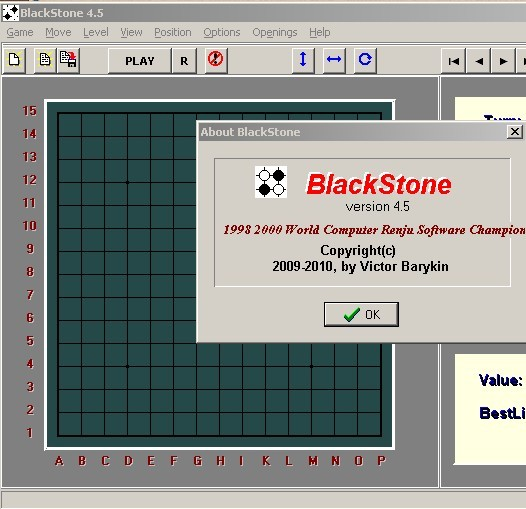

五子棋研究的速度会加速还是会放缓
#1 五子棋研究的速度会加速还是会放缓 作者：江南新绿 发表时间：2010-6-30 23:37:01
暂时没有看到新思想，也没有看到新工具。所以保守的估计，是研究速度放缓。
仅是个人意见。
认为加快的给个理由，谢谢。是否是加速度放缓，速度略有上升？
［此帖子已被 江南新绿 在 2010-6-30 23:39:16 编辑过］
#2 Re:五子棋研究的速度会加速还是会放缓 作者：失落刀 发表时间：2010-7-1 6:52:46
个人估计会放缓，
另外憧憬“连珠终结者”软件速度可以提高一个数量级。
#3 Re:Re:五子棋研究的速度会加速还是会放缓 作者：菜包先生 发表时间：2010-7-1 14:58:27
加快。。。。［此帖子已被 菜包先生 在 2010-7-1 15:00:12 编辑过］
#4 Re:五子棋研究的速度会加速还是会放缓 作者：鬼冢弹间 发表时间：2010-7-1 20:42:59
楼上的到底是什么东西#5 Re:五子棋研究的速度会加速还是会放缓 作者：踵酃 发表时间：2010-7-1 22:42:02
当然放慢拉，都赢过世界团体冠军了，研究领域自然已经到了某个阶段，问题应该是还有没有最新的报告#6 Re:五子棋研究的速度会加速还是会放缓 作者：越狱行辕 发表时间：2010-7-3 4:59:08
我觉得 如果RIF内的话 放缓，#7 Re:五子棋研究的速度会加速还是会放缓 作者：极地剑客 发表时间：2010-7-7 17:32:06
加快吧~拆棋的牛人越来越多了~新式软件也越来越多了~#8 Re:五子棋研究的速度会加速还是会放缓 作者：昏君 发表时间：2011-6-30 23:29:02
五子棋不象围棋空间感强。基本就只能围绕着下出来的棋形做棋。
这么些年下来。。再要有什么大的突破不现实了。
#9 Re:五子棋研究的速度会加速还是会放缓 作者：厦门小天 发表时间：2011-7-1 0:21:24
我觉得进步跟拆棋的热情成正比.#10 Re:五子棋研究的速度会加速还是会放缓 作者：游戏人间 发表时间：2011-7-1 0:35:28
研究只会加快。。。因为有智运会。。等明年再看就肯定是放缓了。今年只会加快到更高的程度。#11 RE:五子棋研究的速度会加速还是会放缓 作者：离子阵阵雨 发表时间：2011-7-1 1:41:28
 通过手机回复：
通过手机回复：个人认为还是那样。。。。